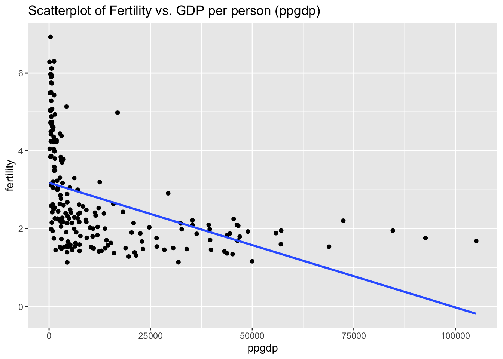
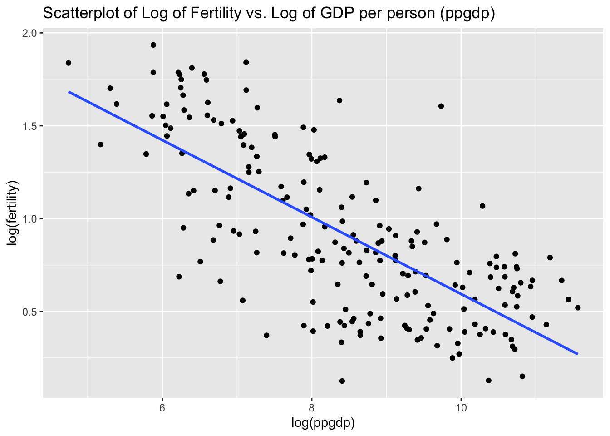
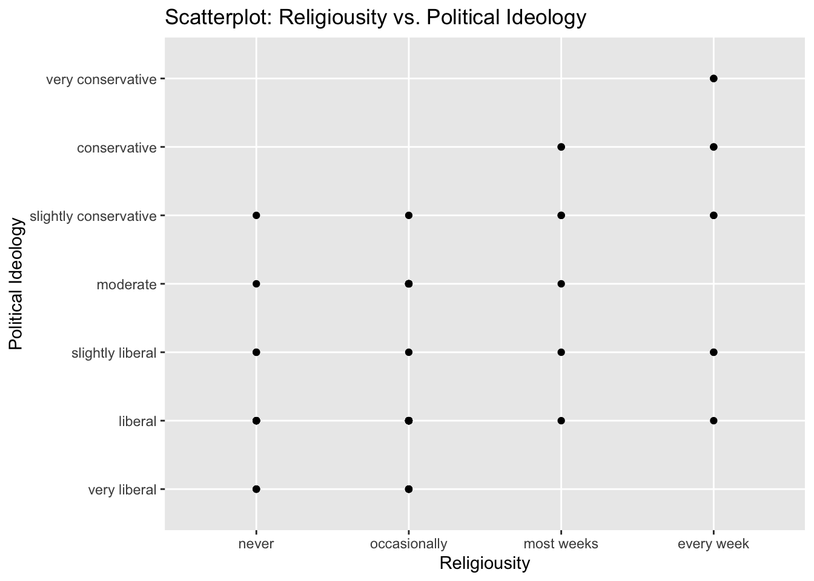
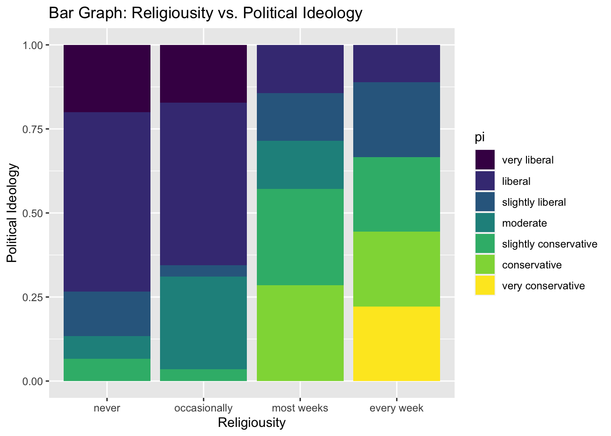

United Nations (Data file: UN11in alr4) The data in the file UN11 contains several variables, including ppgdp, the gross national product per person in U.S. dollars, and fertility, the birth rate per 1000 females, both from the year 2009. The data are for 199 localities, mostly UN member countries, but also other areas such as Hong Kong that are not independent countries. The data were collected from the United Nations (2011). We will study the dependence of fertility on ppgdp.
a)
Identify the predictor and the response.
If we are studying the dependence of fertility on ppgdp (gross national product per person) then:
Loading required package: car
Loading required package: carData
Attaching package: 'car'
The following object is masked from 'package:dplyr':
recode
The following object is masked from 'package:purrr':
some
Loading required package: effects
lattice theme set by effectsTheme()
See ?effectsTheme for details.
Code
library(smss)
Draw the scatterplot of fertility on the vertical axis versus ppgdp on the horizontal axis and summarize the information in this graph. Does a straight-line mean function seem to be plausible for a summary of this graph?
Code
#linear graphlibrary(alr4)ggplot(data = UN11, aes(x=ppgdp, y=fertility)) +geom_point() +geom_smooth(method ='lm', se=F) +labs(title ="Scatterplot of Fertility vs. GDP per person (ppgdp)" )
`geom_smooth()` using formula 'y ~ x'

The above scatter plot of fertility vs. GDP per person (ppgdp) shows that the relationship between the two variables is not linear, but instead a curvilinear relationship. Therefore a straight-line mean function does not seems plausible. Fertility steeply drops as the ppdgp first increases but then levels out. Most of the data is concentrated around the left side of the x-axis with lower ppgdp
c
Draw the scatterplot of log(fertility) versus log(ppgdp) using natural logarithms. Does the simple linear regression model seem plausible for a summary of this graph?
Code
#logarithmic graphggplot(data = UN11, aes(x=log(ppgdp), y=log(fertility))) +geom_point() +geom_smooth(method ='lm', se=F) +labs(title ="Scatterplot of Log of Fertility vs. Log of GDP per person (ppgdp)")
`geom_smooth()` using formula 'y ~ x'

A linear regression model of the natural logs of fertility vs. per person GDP (ppgdp) is a much better model of the relationship between the two variables than the prior model. As the log(ppgdp) increases, the log(fertility) decreases consistently. The data points are distributed consistently below and above the trendline.
Pearson's product-moment correlation
data: UN11$fertility and UN11$ppgdp
t = -6.877, df = 197, p-value = 7.903e-11
alternative hypothesis: true correlation is not equal to 0
95 percent confidence interval:
-0.5456842 -0.3205140
sample estimates:
cor
-0.4399891
Code
cor_log
Pearson's product-moment correlation
data: log(UN11$fertility) and log(UN11$ppgdp)
t = -14.785, df = 197, p-value < 2.2e-16
alternative hypothesis: true correlation is not equal to 0
95 percent confidence interval:
-0.7851376 -0.6519206
sample estimates:
cor
-0.7252483
Not only can that be seen visually in the scatter-plot above, but from the measure of Pearson’s correlation. The Pearson’s r correlation coefficient for for the linear regression model taking the natural logs of both variables (-.724) is a stronger correlation than for the linear regression model of the original data is (-0.440).
Question 2
Annual income, in dollars, is an explanatory variable in a regression analysis. For a British version of the report on the analysis, all responses are converted to British pounds sterling (1 pound equals about 1.33 dollars, as of 2016).
##a
How, if at all, does the slope of the prediction equation change?
Converting income in dollars to income in pounds in an analysis where income is the explanatory variable (y) would result in a less steep slope after the conversion.
b
How, if at all, does the correlation change?
The correlation would not change after converting the units of income from dollars to British pounds. We learned in class that correlation is a standardized version of the slope, with its value not depending on units.
Question 3
Water runoff in the Sierras (Data file: water in alr4) Can Southern California’s water supply in future years be predicted from past data? One factor affecting water availability is stream runoff. If runoff could be predicted, engineers, planners, and policy makers could do their jobs more efficiently. The data file contains 43 years’ worth of precipitation measurements taken at six sites in the Sierra Nevada mountains (labeled APMAM, APSAB, APSLAKE, OPBPC, OPRC, and OPSLAKE) and stream runoff volume at a site near Bishop, California, labeled BSAAM. Draw the scatterplot matrix for these data and summarize the information available from these plots. (Hint: Use the pairs() function.)
As shown in the scatter plot matrix above, the precipitation at APMAM, APSAB, & APSLAKE do not appear to be strongly correlated with run off in BSAAM, whereas the precipitation measured at OPBPC, OPRC, & OPSLAKE do appear to be more strongly & positively correlated with the run-off measured at BSAAM. The top left year variable does not appear to be correlated with any precipitation or runoff levels.
Looking at the correlation between lake precipitation, the precipitation of the 3 lakes beginning with “AP” appear to be strongly positively correlated with one another. The precipitation level of the 3 lakes beginning with “OP” are also strongly positively correlated with one another.
From the scatter plot matrix above, the precipitation at the OPBC, OPRC, and OPSLAKE seem to be the best predictors (explanatory variables) for the runoff level at BSAAM.
To test this, I created a linear regression model with all the lakes as the explanatory variable for runoff at BSAAM. The model with all lake participation as explanatory variables had a strong adjusted R-squared value of 0.9123, with the explanatory variables of OPRC & OPSLAKE both being statistically significant at the 0.05 level.
Code
#linear regression all lake precipitationwater1 <-lm(BSAAM ~ APMAM + APSAB + APSLAKE + OPBPC + OPRC + OPSLAKE, data = water)summary(water1)
Running the linear regression with just the OP lakes as explanatory variables gave an adjusted R squared of 0.8941, suggesting the majority of the variation in BSAAM run off is indeed explained by the precipation at the OP lakes.
Code
#linear model of just OP lakeswater2 <-lm(BSAAM ~ OPBPC + OPRC + OPSLAKE, data = water)summary(water2)
Call:
lm(formula = BSAAM ~ OPBPC + OPRC + OPSLAKE, data = water)
Residuals:
Min 1Q Median 3Q Max
-15964.1 -6491.8 -404.4 4741.9 19921.2
Coefficients:
Estimate Std. Error t value Pr(>|t|)
(Intercept) 22991.85 3545.32 6.485 1.1e-07 ***
OPBPC 40.61 502.40 0.081 0.93599
OPRC 1867.46 647.04 2.886 0.00633 **
OPSLAKE 2353.96 771.71 3.050 0.00410 **
---
Signif. codes: 0 '***' 0.001 '**' 0.01 '*' 0.05 '.' 0.1 ' ' 1
Residual standard error: 8304 on 39 degrees of freedom
Multiple R-squared: 0.9017, Adjusted R-squared: 0.8941
F-statistic: 119.2 on 3 and 39 DF, p-value: < 2.2e-16
Question 4
Professor ratings (Data file: Rateprof in alr4) In the website and online forum RateMyProfessors.com, students rate and comment on their instructors. Launched in 1999, the site includes millions of ratings on thousands of instructors. The data file includes the summaries of the ratings of 364 instructors at a large campus in the Midwest (Bleske-Rechek and Fritsch, 2011). Each instructor included in the data had at least 10 ratings over a several year period. Students provided ratings of 1–5 on quality, helpfulness, clarity, easiness of instructor’s courses, and raterInterest in the subject matter covered in the instructor’s courses. The data file provides the averages of these five ratings. Create a scatterplot matrix of these five variables. Provide a brief description of the relationships between the five ratings.
Code
#RateMyProfessorhead(Rateprof)
gender numYears numRaters numCourses pepper discipline dept
1 male 7 11 5 no Hum English
2 male 6 11 5 no Hum Religious Studies
3 male 10 43 2 no Hum Art
4 male 11 24 5 no Hum English
5 male 11 19 7 no Hum Spanish
6 male 10 15 9 no Hum Spanish
quality helpfulness clarity easiness raterInterest sdQuality sdHelpfulness
1 4.636364 4.636364 4.636364 4.818182 3.545455 0.5518564 0.6741999
2 4.318182 4.545455 4.090909 4.363636 4.000000 0.9020179 0.9341987
3 4.790698 4.720930 4.860465 4.604651 3.432432 0.4529343 0.6663898
4 4.250000 4.458333 4.041667 2.791667 3.181818 0.9325048 0.9315329
5 4.684211 4.684211 4.684211 4.473684 4.214286 0.6500112 0.8200699
6 4.233333 4.266667 4.200000 4.533333 3.916667 0.8632717 1.0327956
sdClarity sdEasiness sdRaterInterest
1 0.5045250 0.4045199 1.1281521
2 0.9438798 0.5045250 1.0744356
3 0.4129681 0.5407021 1.2369438
4 0.9990938 0.5882300 1.3322506
5 0.5823927 0.6117753 0.9749613
6 0.7745967 0.6399405 0.6685579
From the scatter plot matrix, it is shown there seems to be a strong positive correlation between an instructor’s quality and clarity and quality and helpfulness. The correlation between an instructor’s clarity and helpfulness also appears relatively strong & positive. Easiness and raterInterest have a much weaker correlation with any other variables.
Question 5
For the student.survey data file in the smss package, conduct regression analyses relating (by convention, y denotes the outcome variable, x denotes the explanatory variable)
a
Graphically portray how the explanatory variable relates to the outcome variable in each of the two cases
subj ge ag hi co dh dr tv sp ne ah ve pa pi re
1 1 m 32 2.2 3.5 0 5.0 3 5 0 0 FALSE r conservative most weeks
2 2 f 23 2.1 3.5 1200 0.3 15 7 5 6 FALSE d liberal occasionally
3 3 f 27 3.3 3.0 1300 1.5 0 4 3 0 FALSE d liberal most weeks
4 4 f 35 3.5 3.2 1500 8.0 5 5 6 3 FALSE i moderate occasionally
5 5 m 23 3.1 3.5 1600 10.0 6 6 3 0 FALSE i very liberal never
6 6 m 39 3.5 3.5 350 3.0 4 5 7 0 FALSE d liberal occasionally
ab aa ld
1 FALSE FALSE FALSE
2 FALSE FALSE NA
3 FALSE FALSE NA
4 FALSE FALSE FALSE
5 FALSE FALSE FALSE
6 FALSE FALSE NA
Code
summary(student.survey)
subj ge ag hi co
Min. : 1.00 f:31 Min. :22.00 Min. :2.000 Min. :2.600
1st Qu.:15.75 m:29 1st Qu.:24.00 1st Qu.:3.000 1st Qu.:3.175
Median :30.50 Median :26.50 Median :3.350 Median :3.500
Mean :30.50 Mean :29.17 Mean :3.308 Mean :3.453
3rd Qu.:45.25 3rd Qu.:31.00 3rd Qu.:3.625 3rd Qu.:3.725
Max. :60.00 Max. :71.00 Max. :4.000 Max. :4.000
dh dr tv sp
Min. : 0 Min. : 0.200 Min. : 0.000 Min. : 0.000
1st Qu.: 205 1st Qu.: 1.450 1st Qu.: 3.000 1st Qu.: 3.000
Median : 640 Median : 2.000 Median : 6.000 Median : 5.000
Mean :1232 Mean : 3.818 Mean : 7.267 Mean : 5.483
3rd Qu.:1350 3rd Qu.: 5.000 3rd Qu.:10.000 3rd Qu.: 7.000
Max. :8000 Max. :20.000 Max. :37.000 Max. :16.000
ne ah ve pa
Min. : 0.000 Min. : 0.000 Mode :logical d:21
1st Qu.: 2.000 1st Qu.: 0.000 FALSE:60 i:24
Median : 3.000 Median : 0.500 r:15
Mean : 4.083 Mean : 1.433
3rd Qu.: 5.250 3rd Qu.: 2.000
Max. :14.000 Max. :11.000
pi re ab aa
very liberal : 8 never :15 Mode :logical Mode :logical
liberal :24 occasionally:29 FALSE:60 FALSE:59
slightly liberal : 6 most weeks : 7 NA's :1
moderate :10 every week : 9
slightly conservative: 6
conservative : 4
very conservative : 2
ld
Mode :logical
FALSE:44
NA's :16
Code
##?student.survey
y = political ideology and x = religiosity,
Political ideology and religiosity are currently coded as ordinal variables.
There are 7 levels of political idealogy: - very liberal
- liberal - slightly liberal - moderate - slightly conservative - conservative - very conservative
There are 4 levels of religiosity: - never - occasionally - most weeks - every week
Code
#Scatterplot Religiousity vs. Political Ideologyggplot(data = student.survey, aes(x = re , y = pi)) +geom_smooth(method ='lm', se=F) +geom_point() +labs(title ="Scatterplot: Religiousity vs. Political Ideology", x ="Religiousity", y ="Political Ideology")
`geom_smooth()` using formula 'y ~ x'

From the scatter-plot there appears to be a fairly strong positive correlation between religiosity and political ideology, with the more often someone attends religious services the more conservative their political ideology. A scatter plot model suggests that both ordinal scales have a fixed distance between responses, which is not correct for either variable.
To supplement the scatter plot I also created a bar graph to
Code
#Bargraph pi vs reggplot(data = student.survey, aes(x = re, fill = pi)) +geom_bar(position ="fill") +labs(title ="Bar Graph: Religiousity vs. Political Ideology", x ="Religiousity", y ="Political Ideology")

The bar graph shows a high concentration of people who never or occasionally attend religious services were mostly liberal (indigo-purple), whereas people who report attending religious services most weeks were more conservative (green). People who reported attending religious services every week had mostly conservative (green) and very conservative (yellow) political idealogies.
y = high school GPA and x = hours of TV watching.
Code
#scatterplot hi vs. tvggplot(data = df, aes(x = tv , y = hi)) +geom_point() +geom_smooth(method ='lm', se=F) +labs(title ="Scatterplot Highschool GPA vs. Hours of tv watched", x ="TV(avg hours per week)", y ="High School GPA")
Error in `ggplot()`:
! You're passing a function as global data.
Have you misspelled the `data` argument in `ggplot()`
A scatter plot works well for modeling two numeric variables, high school GPA & avg hours of tv watched per week. Looking at the data fitted with a trend line association between most data points are above of below the trend line and in the upper left corner of the scatter plot, suggesting most students watch been 0-10 hours of TV have a GPA of 3.0 or above.
It does not look like from the scatter plot there is an association between these variables. The trend line suggests if there is a correlation between the variables, it is negative in nature, with more hours of TV correlating with lower high school GPA. This will be investigated further in part b.
b Summarize and interpret results of inferential analyses.
y = political ideology and x = religiosity,
In order to create a linear regression model, both ordinal variables needed to be converted to numeric type. The resulting model suggests
Code
#Linear regression of pi & relm_pi <-lm(as.numeric(pi) ~as.numeric(re) , data = student.survey)summary(lm_pi)
Call:
lm(formula = as.numeric(pi) ~ as.numeric(re), data = student.survey)
Residuals:
Min 1Q Median 3Q Max
-2.81243 -0.87160 0.09882 1.12840 3.09882
Coefficients:
Estimate Std. Error t value Pr(>|t|)
(Intercept) 0.9308 0.4252 2.189 0.0327 *
as.numeric(re) 0.9704 0.1792 5.416 1.22e-06 ***
---
Signif. codes: 0 '***' 0.001 '**' 0.01 '*' 0.05 '.' 0.1 ' ' 1
Residual standard error: 1.345 on 58 degrees of freedom
Multiple R-squared: 0.3359, Adjusted R-squared: 0.3244
F-statistic: 29.34 on 1 and 58 DF, p-value: 1.221e-06
The linear regression model has a positive coefficient of 0.97, suggesting for “one unit” increase in religiosity there is nearly a “one unit” increase in political ideology. One unit is in quotes because these variables are ordinal and there isn’t actually fixed distance in units between them. Nonetheless, there is a positive, statistically significant correlation (p value < 0.001). The adjusted R-squared value is 0.3244 which is weak-moderate suggests there is a correlation between the two variables
y = high school GPA and x = hours of TV watching. ,
Code
#linear regression model gpa vs tvlm_gpa <-lm(hi ~ tv , data = student.survey) summary(lm_gpa)
Call:
lm(formula = hi ~ tv, data = student.survey)
Residuals:
Min 1Q Median 3Q Max
-1.2583 -0.2456 0.0417 0.3368 0.7051
Coefficients:
Estimate Std. Error t value Pr(>|t|)
(Intercept) 3.441353 0.085345 40.323 <2e-16 ***
tv -0.018305 0.008658 -2.114 0.0388 *
---
Signif. codes: 0 '***' 0.001 '**' 0.01 '*' 0.05 '.' 0.1 ' ' 1
Residual standard error: 0.4467 on 58 degrees of freedom
Multiple R-squared: 0.07156, Adjusted R-squared: 0.05555
F-statistic: 4.471 on 1 and 58 DF, p-value: 0.03879
The linear regression shows a negative correlation between hours of tv watched and high school GPA that is statistically significant at the 0.05 level (p = 0.0388), with ever hour of tv watched a week resulting in a 0.018 reduction in high school GPA. Looking at the adjusted R-squared of 0.05555 is extremely low, suggesting that there is not strong association between the 2 variables. A linear model does not appear to be a good fit for this data.
Source Code
---title: "Homework 3"author: "Emma Narkewicz"description: "linear regression" date: "04/11/2023"format: html: toc: true code-fold: true code-copy: true code-tools: truecategories: - hw3 - scatterplot - linear_regression - emma_narkewicz---# Question 1United Nations (Data file: UN11in alr4) The data in the file UN11 contains several variables,including ppgdp, the gross national product per person in U.S. dollars, and fertility, the birthrate per 1000 females, both from the year 2009. The data are for 199 localities, mostly UNmember countries, but also other areas such as Hong Kong that are not independent countries.The data were collected from the United Nations (2011). We will study the dependence offertility on ppgdp.## a) Identify the predictor and the response.If we are studying the dependence of fertility on ppgdp (gross national product per person) then: Predictor = ppgdp Response = fertility```{r}#load necessary packageslibrary(tidyverse)library(alr4)library(smss)```(b) Draw the scatterplot of fertility on the vertical axis versus ppgdp on the horizontal axisand summarize the information in this graph. Does a straight-line mean function seem tobe plausible for a summary of this graph?```{r}#linear graphlibrary(alr4)ggplot(data = UN11, aes(x=ppgdp, y=fertility)) +geom_point() +geom_smooth(method ='lm', se=F) +labs(title ="Scatterplot of Fertility vs. GDP per person (ppgdp)" )```The above scatter plot of fertility vs. GDP per person (ppgdp) shows that the relationship between the two variables is not linear, but instead a curvilinear relationship. Therefore a straight-line mean function does not seems plausible. Fertility steeply drops as the ppdgp first increases but then levels out. Most of the data is concentrated around the left side of the x-axis with lower ppgdp## c (c) Draw the scatterplot of log(fertility) versus log(ppgdp) using natural logarithms. Doesthe simple linear regression model seem plausible for a summary of this graph? ```{r}#logarithmic graphggplot(data = UN11, aes(x=log(ppgdp), y=log(fertility))) +geom_point() +geom_smooth(method ='lm', se=F) +labs(title ="Scatterplot of Log of Fertility vs. Log of GDP per person (ppgdp)") ```A linear regression model of the natural logs of fertility vs. per person GDP (ppgdp) is a much better model of the relationship between the two variables than the prior model. As the log(ppgdp) increases, the log(fertility) decreases consistently. The data points are distributed consistently below and above the trendline. ```{r}## mathematical correlation testcor_lin <-cor.test(UN11$fertility, UN11$ppgdp)cor_log <-cor.test(log(UN11$fertility), log(UN11$ppgdp))cor_lincor_log```Not only can that be seen visually in the scatter-plot above, but from the measure of Pearson's correlation. The Pearson's r correlation coefficient for for the linear regression model taking the natural logs of both variables (-.724) is a stronger correlation than for the linear regression model of the original data is (-0.440).# Question 22. Annual income, in dollars, is an explanatory variable in a regression analysis. For a Britishversion of the report on the analysis, all responses are converted to British pounds sterling (1 poundequals about 1.33 dollars, as of 2016).##a How, if at all, does the slope of the prediction equation change?slope = (y2-y1)/(x2-x1)```{r}#slope hypothetical annual income dollars & pounds annualincome_dollars =c(1, 2)annualincome_pounds =1.33* (annualincome_dollars)y =c(1,2)slope_dollars = (2-1)/(2-1) slope_dollarsslope_pounds = (2-1)/(2.66-1.33)slope_pounds```Converting income in dollars to income in pounds in an analysis where income is the explanatory variable (y) would result in a less steep slope after the conversion.## b How, if at all, does the correlation change?The correlation would not change after converting the units of income from dollars to British pounds. We learned in class that correlation is a standardized version of the slope, with its value not depending on units.# Question 33. Water runoff in the Sierras (Data file: water in alr4) Can Southern California’s watersupply in future years be predicted from past data? One factor affecting water availability is streamrunoff. If runoff could be predicted, engineers, planners, and policy makers could do their jobs more efficiently. The data file contains 43 years’ worth of precipitation measurements taken at sixsites in the Sierra Nevada mountains (labeled APMAM, APSAB, APSLAKE, OPBPC, OPRC, andOPSLAKE) and stream runoff volume at a site near Bishop, California, labeled BSAAM. Drawthe scatterplot matrix for these data and summarize the information available from theseplots. (Hint: Use the pairs() function.)```{r}#create scatterplot matrix precipitation head(water)pairs(water)```As shown in the scatter plot matrix above, the precipitation at APMAM, APSAB, & APSLAKE do not appear to be strongly correlated with run off in BSAAM, whereas the precipitation measured at OPBPC, OPRC, & OPSLAKE do appear to be more strongly & positively correlated with the run-off measured at BSAAM. The top left year variable does not appear to be correlated with any precipitation or runoff levels.Looking at the correlation between lake precipitation, the precipitation of the 3 lakes beginning with "AP" appear to be strongly positively correlated with one another. The precipitation level of the 3 lakes beginning with "OP" are also strongly positively correlated with one another. From the scatter plot matrix above, the precipitation at the OPBC, OPRC, and OPSLAKE seem to be the best predictors (explanatory variables) for the runoff level at BSAAM.To test this, I created a linear regression model with all the lakes as the explanatory variable for runoff at BSAAM. The model with all lake participation as explanatory variables had a strong adjusted R-squared value of 0.9123, with the explanatory variables of OPRC & OPSLAKE both being statistically significant at the 0.05 level.```{r}#linear regression all lake precipitationwater1 <-lm(BSAAM ~ APMAM + APSAB + APSLAKE + OPBPC + OPRC + OPSLAKE, data = water)summary(water1)```Running the linear regression with just the OP lakes as explanatory variables gave an adjusted R squared of 0.8941, suggesting the majority of the variation in BSAAM run off is indeed explained by the precipation at the OP lakes.```{r}#linear model of just OP lakeswater2 <-lm(BSAAM ~ OPBPC + OPRC + OPSLAKE, data = water)summary(water2)```# Question 44. Professor ratings (Data file: Rateprof in alr4) In the website and online forumRateMyProfessors.com, students rate and comment on their instructors. Launched in 1999, the siteincludes millions of ratings on thousands of instructors. The data file includes the summaries ofthe ratings of 364 instructors at a large campus in the Midwest (Bleske-Rechek and Fritsch, 2011).Each instructor included in the data had at least 10 ratings over a several year period. Studentsprovided ratings of 1–5 on quality, helpfulness, clarity, easiness of instructor’s courses, andraterInterest in the subject matter covered in the instructor’s courses. The data file provides theaverages of these five ratings. Create a scatterplot matrix of these five variables. Provide abrief description of the relationships between the five ratings.```{r}#RateMyProfessorhead(Rateprof)Rateprof2 <- Rateprof %>%select(c(quality, clarity, helpfulness, easiness, raterInterest)) pairs(Rateprof2)```From the scatter plot matrix, it is shown there seems to be a strong positive correlation between an instructor's quality and clarity and quality and helpfulness. The correlation between an instructor's clarity and helpfulness also appears relatively strong & positive. Easiness and raterInterest have a much weaker correlation with any other variables.# Question 55. For the student.survey data file in the smss package, conduct regression analyses relating(by convention, y denotes the outcome variable, x denotes the explanatory variable)## a Graphically portray how the explanatory variable relates to the outcome variable ineach of the two cases```{r}#load & preview datalibrary(smss)data("student.survey")head(student.survey)summary(student.survey)##?student.survey```(i) y = political ideology and x = religiosity,Political ideology and religiosity are currently coded as ordinal variables.There are 7 levels of political idealogy: - very liberal - liberal - slightly liberal - moderate - slightly conservative - conservative - very conservative There are 4 levels of religiosity: - never - occasionally - most weeks - every week```{r}#Scatterplot Religiousity vs. Political Ideologyggplot(data = student.survey, aes(x = re , y = pi)) +geom_smooth(method ='lm', se=F) +geom_point() +labs(title ="Scatterplot: Religiousity vs. Political Ideology", x ="Religiousity", y ="Political Ideology")```From the scatter-plot there appears to be a fairly strong positive correlation between religiosity and political ideology, with the more often someone attends religious services the more conservative their political ideology. A scatter plot model suggests that both ordinal scales have a fixed distance between responses, which is not correct for either variable. To supplement the scatter plot I also created a bar graph to ```{r}#Bargraph pi vs reggplot(data = student.survey, aes(x = re, fill = pi)) +geom_bar(position ="fill") +labs(title ="Bar Graph: Religiousity vs. Political Ideology", x ="Religiousity", y ="Political Ideology")``` The bar graph shows a high concentration of people who never or occasionally attend religious services were mostly liberal (indigo-purple), whereas people who report attending religious services most weeks were more conservative (green). People who reported attending religious services every week had mostly conservative (green) and very conservative (yellow) political idealogies. (ii) y = high school GPA and x = hours of TV watching.```{r}#scatterplot hi vs. tvggplot(data = df, aes(x = tv , y = hi)) +geom_point() +geom_smooth(method ='lm', se=F) +labs(title ="Scatterplot Highschool GPA vs. Hours of tv watched", x ="TV(avg hours per week)", y ="High School GPA")```A scatter plot works well for modeling two numeric variables, high school GPA & avg hours of tv watched per week. Looking at the data fitted with a trend line association between most data points are above of below the trend line and in the upper left corner of the scatter plot, suggesting most students watch been 0-10 hours of TV have a GPA of 3.0 or above. It does not look like from the scatter plot there is an association between these variables. The trend line suggests if there is a correlation between the variables, it is negative in nature, with more hours of TV correlating with lower high school GPA. This will be investigated further in part b.## b Summarize and interpret results of inferential analyses.(i) y = political ideology and x = religiosity,In order to create a linear regression model, both ordinal variables needed to be converted to numeric type. The resulting model suggests ```{r}#Linear regression of pi & relm_pi <-lm(as.numeric(pi) ~as.numeric(re) , data = student.survey)summary(lm_pi) ```The linear regression model has a positive coefficient of 0.97, suggesting for "one unit" increase in religiosity there is nearly a "one unit" increase in political ideology. One unit is in quotes because these variables are ordinal and there isn't actually fixed distance in units between them. Nonetheless, there is a positive, statistically significant correlation (p value < 0.001). The adjusted R-squared value is 0.3244 which is weak-moderate suggests there is a correlation between the two variables(ii) y = high school GPA and x = hours of TV watching.,```{r}#linear regression model gpa vs tvlm_gpa <-lm(hi ~ tv , data = student.survey) summary(lm_gpa)```The linear regression shows a negative correlation between hours of tv watched and high school GPA that is statistically significant at the 0.05 level (p = 0.0388), with ever hour of tv watched a week resulting in a 0.018 reduction in high school GPA. Looking at the adjusted R-squared of 0.05555 is extremely low, suggesting that there is not strong association between the 2 variables. A linear model does not appear to be a good fit for this data.